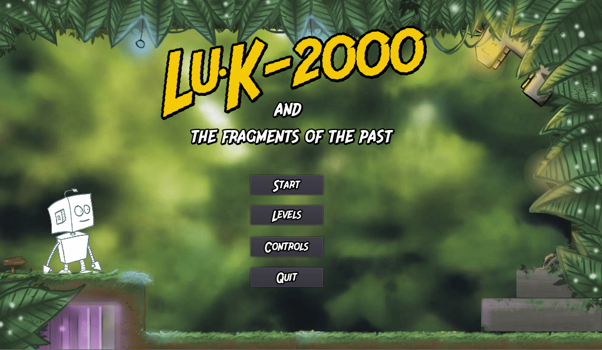
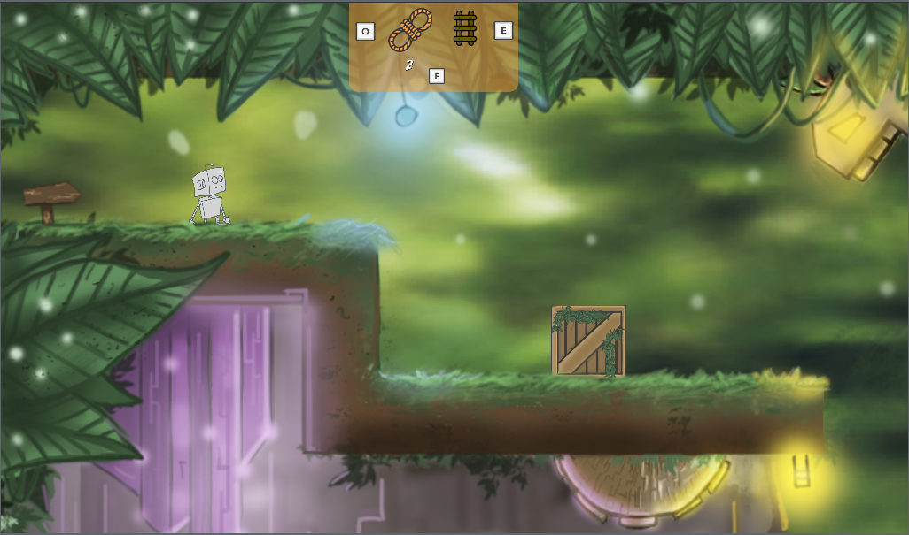
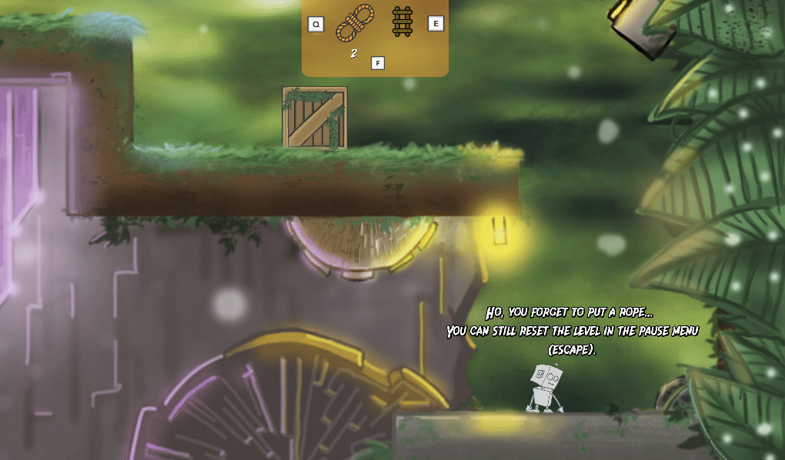
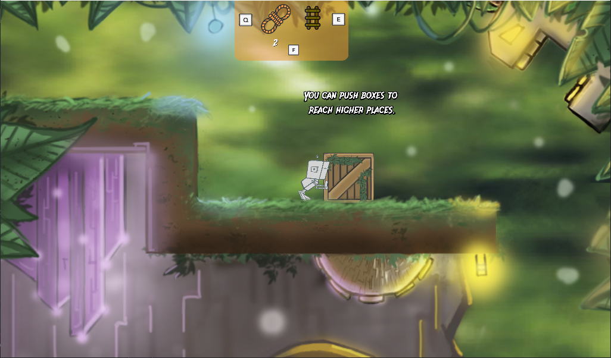
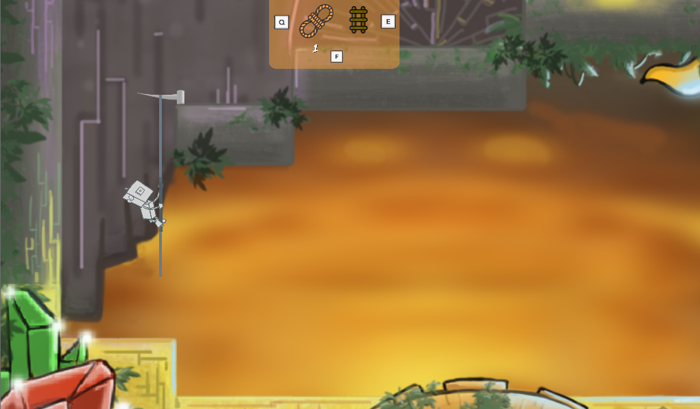

Play the game
LuK-2000 is a small robot passionate about the study of ancient civilizations. Help him find artifacts of the past, by exploring ancient ruins. But don’t forget, your only exit is the entry!
Play the LD48-release
This is the LD48 game release. If you want to rate us for the LD48 use this version. The game is playable in your browser HERE.
Updated version
Based on all your feedback and reviews we improved the game. If you want a better experience of the game you can use this version HERE.

Technical overview
The source code of the game is open source (GPL3) and available on github. The branch LD48-release contains the version released for the jam, we won't update it after the event.
The game is playable in your web browser. We didn't plan to make any Windows/Linux release yet, if you need it don't hesitate to tell us.
Crédits
- Graphics: @ptitbouchon
- Gamedev: @olddadou, @chtimy and @avzgui
- Musics:
- Title Theme: Amber (by Ken Elkinson)
- Level -1: Citadel (by Celestial Aeon Project)
- Level -2: Out of Harmony (by Joseph Curwen)
- Level -3: Universe (by J.L.T)
Gallery
Explore a colorful universe!

But don’t forget, that any dive can be your last … as you may not be able to go home.

You can push boxes to reach higher places. 
Or use ropes and ladders. However, your inventory is limited … use it wisely. 